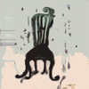
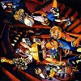

#えーと長らく「買おう買おう」と思いつつ買ってなかった（店で直接見かけないと買わない悪癖）向島ゆり子さんの1996年のソロアルバムです。
タンゴがテーマなんでしょーか？（そーいえば「
パンゴ」は「パンク+タンゴ」だったなぁ）、それはともかくバイオリン（アコーディオンも）のメロディーがとても気持ちイイです。特に3曲目の久下さんの打ち込みみたいなドラムの音の塊の中から、バイオリンが切り込んで来る所とか何度聴いてもたまらん。
参加ミュージシャンも面白いですね、Tom Cora,Samm Bennet,Wayne HorvitzなどのN.Y.勢の人も居れば、カーネーションの直江さんに、
劇団時々自動（元パンゴ）の今井次郎さんとか、もちろん清水一登さんとか梅津和時さんとか。
バラエティ有って面白いっす、SOLA聴いててコレ聴いて無い人いたら今すぐ
off noteのサイトから是非。(2003.6.24)

- It's Fine Today
- ミロンバ
- I Miss You
- ひえつき節
- Wait!
- Untitled
- Tango
- ハバネラ
- 恋の予感
- 向島ゆり子 (violin,accordion,sample,voice)
- 清水一登 (piano)
- Wayne Horvitz (piano)
- 小松亮太 (bandneon)
- 梅津和時 (clarinet)
- 直江政太郎 (guitars)
- 早坂紗知 (sax)
- 吉森信 (synthesizer,hammond organ)
- 久下昌三 (thermin,o.o.o)
- 今井次郎 (sample,voice)
- 木津茂理 (voice)
- 吉野弘志 (wood bass)
- 松永孝義 (wood bass)
- Tom Cora (cello)
- Samm Bennett (percussions)
- 久下恵生 (drums,percussions)
off note: ON-13 (1996)
#仙波清彦名義の初のアルバム、邦楽をメインしたわりと静かな印象のアルバム。現在は手に入りにくいかな....でも結構良いです。清水一登作曲の7曲目なんて相当ムチャなことやってます。

- 夏河
- 鳥羽殿
- 狸
- 石工
- うすぎぬ
- BUSON
- ふぐ
- 河童
- 温泉
- 春の水
- 雲を呑む
- こだま
composed by
仙波清彦 (on 2.4.6.11.)
板倉文 (on 1.)
久米大作 (on 3.9.)
矢野誠 (on 8.10.12.)
清水一登 (on 7.)
近藤達郎 (on 4.5.)
- 仙波清彦 (drums,percussions,鼓,能管)
- 仙波宏祐 (小鼓)
- 板倉文 (guitars,charango)
- 幸田実 (bass)
- 近藤達郎 (synthesizers,clarinet)
- Ma*To (tabla,percussions)
- 久米大作 (piano,synthesizers)
- 清水一登 (keyboards,clarinet,saxes)
- 矢野誠 (piano)
- 小川美潮 (vocals)
- ヘンリー片岡 (vocals)
- 柴田徹彦 (笛)
- 吉田弘美 (笙)
- 高桑賢治 (篳篥)
- 青山純 (drums,percussions)
- 横沢龍太郎 (drums,percussions)
- 梶原茂実 (drums,percussions)
- 神保彰 (drums,percussions)
- 佐藤一憲 (drums,percussions)
- 則竹裕之 (drums,percussions)
- 田中顕 (drums,percussions)
- れいち (drums,percussions)
- 平ケ倉良枝 (drums,percussions)
- 斎藤ネコ (violin)
- 栄田嘉彦 (violin)
- 山田雄司 (viola)
- 南浩之 (flugelhorn)
- 須山芳博 (flugelhorn)
- 大畑篠亭 (fagotto)
- 宮島基栄 (clarinet)
CBS/SONY RECORDS: 32DH-5073 (1988)
#参加してる人たちを見れば説明不用だと思いますが、本当にこれだけの人数で演奏してます、物凄いことになってます。一言で説明すると大宴会です。
オレカマとか、この人数だとなんか物凄く気持ちいいです。さらに何て言うか全体を貫き通す
いい加減な感じがたまらないですね。最近はこんな事全然やらないみたいですけど、またバカみたいに人数集めたライヴをやって欲しいです＞仙波清彦様
ちなみにLDもVHSも出てます、コレ。入手困難かもしれないですけど、映像付きのほうが楽しいかも。

- 明るいテレンコ娘
- ウェイトレス
- ホーハイ節
- オレカマ
- リボンの騎士
- シューベルトのセレナーデ
- この胸のときめきを
- 奇妙な果実
- 続・オレカマ
- 体育祭
- ブンガワン・ソロ
- 大迷惑
- 水
- 最後のオレカマ
- あいみん
- 仙波清彦 (conducter,percussions)
- 戸川純 (vocals)
- デーモン小暮 (vocals)
- 小川美潮 (vocals)
- 奥田民生 (vocals)
- 阿部義晴 (vocals)
- 木本通子 (vocals)
- 木津茂理 (vocals)
- 三橋美香子 (vocals)
- 渡辺香津美 (guitars)
- 板倉文 (guitars)
- バカボン鈴木 (bass)
- 渡辺等 (bass)
- 吉田智 (bass)
- 小林靖宏 (accordion)
- 十亀正司 (clarinet)
- 石垣三十郎 (trumpet)
- 松本治 (trombone)
- ボーン助谷 (trombone)
- 坂田明 (sax)
- ダディ柴田 (sax)
- 矢口博康 (sax)
- 金子飛鳥 (violin)
- 斉藤ネコ (violin)
- 久米大作 (keyboards)
- 清水一登 (keyboards)
- 福原徹彦 (笛)
- 福原百華 (笛)
- 藤尾佳子 (三味線)
- 太田幸子 (三味線)
- 杵屋五吉郎 (三味線)
- 田中悠美子 (三味線)
- 内藤洋子 (琴)
- 内藤久子 (琴)
- 望月左之助 (邦打)
- 仙波大明 (邦打)
- 仙波和典 (邦打)
- 仙波宏紅 (邦打)
- 田淵結 (邦打)
- 若林忠宏 (tabla)
- Ma*To (tabla)
- マック清水 (conga)
- 田中倫人 (conga)
- 横沢龍太郎 (percussions)
- Whacho (percussions)
- 田中顕 (percussions)
- 梶原茂実 (percussions)
- 植村昌弘 (percussions)
- 鈴木賢治 (percussions)
- 村上"ponta"秀一 (drums)
- 青山純 (drums)
- れいち (drums)
- 阿部薫 (drums)
SONY RECORDS: SRCL-2132 (1991.8.28)
#UBiK(NaO2)（現
Giulietta Machineの大津真さんとえとうなおこさんと、れいちさんに斎藤ネコさんに・・・不思議なメンバーで、不思議な音楽をやっておられます。
- まきわり歌
- 砂の女
- たまねぎむかないで
- SHORT HOPE
- 最後の楽園
- 海
- 空・間 (あくま) I
- 空・間 (あくま) II
- あおみどろ
- BATTA
作曲: 大津真
作詞: 伊藤なおみ
編曲: Sunset Kids
- 伊藤ひとみ (vocals)
- 大津真 (guitars,keyboards)
- えとうなおこ (keyboards,vocals)
- 斉藤ネコ (violin,keyboards)
- さいのをまさあき (bass,keyboards)
- れいち (drums,vocals)
- 清水一登 (clarinet)
- 篠田昌巳 (alto sax,bariton sax)
- 村田陽一 (trombone)
- グレート栄田 (violin)
- 山田雄司 (viola)
- 藤森亮一 (cello)
- 峯岸邦江 (chorus)
- 田部井美樹 (chorus)
- 藤本敦夫 (chorus)
POLYDOR/Sunset Kids: SK-89001 (1989)
#えーと繊細な感じのギターの旋律に対して、ゲストの楽器が寄り添うでもなく崩すでもなく音を出していきます。チェンバーミュージックやJohn Faheyの音楽を一瞬思い起こすような感じですけど、聴けば聴くほど何とも言い難い世界です。
水面の波紋が消えるような感じでギターの音が響いて消えていきます（このCDで音がミュートされる事は無いです）、「Cathode」あたりの大友良英にも似たような、残響を聴かせるような音と思います。
最初は共演者のメンツを見てジャズロックみたいなのを想像してたんですけど、（良い意味で）期待とは全く違う音でした。音響派とかポストロックとかが出てくる以前の1990年にこんな音楽が日本に存在してる事にはビックリしました。
残念ながら、飯島晃氏は1997年に亡くなっています。

- いばらのサギ師 (Five Songs For A Fox In The Thorn)
-
-
-
-
- 月の谷のピレア (Pilea Moon Valley)
-
-
-
- 背広の男と象の庭 (A Gentleman And The Elephant Garden)
-
-
- ロビン (Robin)
-
-
-
- 待つための根拠 (A Waiting Grounds)
-
-
-
- セラフィタの季節 (Season Of Seraphita)
- 飯島晃 (guitars)
- 近藤達郎 (accordion,harmonica)
- 篠田昌巳 (soprano sax)
- 向島ゆり子 (violin)
- 清水一登 (vibraphone)
- れいち (percussions)
puff-up: puf-2 (1990)

- 天女
- 初恋のあとのあと
- 痛い時間
- 七夕
- 花子さんの場合
- 海ざる
- カメレオン・パーティー
- 重陽
- す・き・ま
- 残夢
- 端午
- さっちゃん
- ダンスの楽園
- 佳村萌 (vocals)
- 張紅陽 (keyboard,flute,recorder,accordion,chorus)
- 清水一登 (bass clainet)
- れいち (chorus)
- 浦山秀彦 (guitars)
- 向島ゆり子 (violin)
- 斉藤ネコ (violin)
- 近藤達郎 (clarinet,harmonica)
- 横澤龍太郎 (percussion)
- whacho (percussion)
- バカボン鈴木 (bass)
- 渡辺等 (bass)
- 幸田実 (bass)
vivid sound: CHOP.D-09 (1989)
#横川理彦さんなんかとよく一緒にやってるみたい、最近はブレヒトなんかを歌ってるとか。コレは1986年の2枚目の初CD化です。デジタルマスタリングがafter dinnerの宇都宮泰。
プロデュースがすきすきスウィッチの佐藤幸雄さんで、80年代のニューウェーブ系っていうか・・・自分の好きなアノ辺の人々がこぞって参加してます。KILLING TIMEとかCOMPOSTELAとかA-MUSIKとか。
どの曲も結構一癖あるよーな感じで、須山公美子さんの唄は子供みたいだっったり、昔の歌謡曲みたいだったり、シャンソンみたいだったりしますけど、不思議と統一感が有ります。長く聴けそう。
- 月夜の真空管
- 新しい大陸
- 空中ブランコの唄
- しゃべらないわ
- 船唄
- 花まつり
- 東京一の軽業師
- 星のかけら
- 乙女のワルツ
- マラソンランナー
- すたあまいん
music & lyrics by 須山公美子
produced by 佐藤幸雄
mixed by 藤井暁
digital sound recordings mastered by 宇都宮泰
- 須山公美子 (vocals,accordion,piano)
- 斎藤ネコ (1st violin on 1.8.)
- 栄田嘉彦 (2nd violin on 1.8.)
- 山田雄司 (viola on 1.8.)
- 溝口肇 (cello on 1.8.)
- 篠田昌巳 (sax on 2.7.)
- 中尾勘ニ (bass trombone on 2.)
- 中崎博生 (euphonium on 2.)
- 大熊亘 (vibraphone on 2.)
- 寒河江勇志 (cello,flute on 2.)(bass on 3.4.10.)
- れいち (snare drums on 2.)
- 近藤達郎 (electric percussions on 3.)(claves,footstep on 4.)(piano on 8.)
- 迎久良 (mandolin on 3.)
- 清水一登 (piano on 4.)
- 竹田賢一 (大正琴 on 6.)
- 高田光子 (チンドン on 7.)
- 高田千代子 (drums on 7.)
- 佐藤幸雄 (guitars on 9.)(vibraphone on 11.)
- 小山伸一郎 (wood winds on 10.)
- 伊藤信介 (percussions on 10.)
- 服部夏樹 (tenor sax on 10.)
OPCO: OPCO-0203 (2002, original release 1986 - ZERO RECORDS)
#今堀恒雄（清水さんのソロの頃からの付き合いになるのかな？）率いるTipographicaの3枚目のアルバム。Tipographicaにはライヴのゲストとしても何回か参加していました。
コレを録音した頃のAREPOSのライヴで「とんでもないレコーディングに参加した・・・」とか言っていたのを覚えてます。

- Friends
- TP-1故障せよ (control tower says,"tp-1,break down.")
- am 3:28 新宿
am 3:45 霞ケ関
am 5:02 ベルリン
↓
ゴム人間対サラリーマン (white-collar worker v.s. black rubber man)
- そして最後の船は行く and then last ship is going
- 日本間とMC-500
- 笑う写真 (laughin' photograph)
- 森を出る方法 (forest tipographica II)
- 今堀恒雄 (guitars)
- 外山明 (drums,percussions)
- 水谷浩章 (bass)
- 水上聡 (keyboards)
- 菊地成孔 (saxes)
- 松本治 (trombone)
- 清水一登 (mokkin on 1.2.4.6.)
PONY CANYON/MONSWAY: PCCR-00204 (1996.4.19)
#ソウルフラワーユニオン中川敬のユニット、大熊亘さんの色が強く出ています。
清水さんは一応サブメンバーのような形でクレジットされています。
- ロスト・ホームランドのテーマ (Theme from Lost Homeland)
- 潮の路 (Sea Road)
- おんぼろの夜明け (Raggaed Daybreak)
- おやすみ (Good Night)
- 日食の街 (City of Eclipse)
- 満月の夕 (A Full Moon Evening)
- アイラー・チンドン (Ayler Ching-Dong)
- ニュー・モーニング (New Morning)
- 夜に感謝を (A Thank-Giving to The Night)
- ゴーストーリー (Ghostory)
- 落日エレジー (Sunset Elegy)
- ゴーン（ホーム）
- ラ・パルティーダ (La Partida)
- 短距離走者の孤独 (The Loneliness of A Short Distance Runner)
- 中川敬 (vocals,guitars,三線,bouzouki)
- 大熊亘 (clarinets,sax,accordion,etc...)
- Samm Bennett (drums,percussions,vocals)
- 船戸博史 (bass)
- 桜井芳樹 (guitars)
- 清水一登 (keyboards)
- 千野秀一 (keyboards)
- Donal Lunny (bouzouki)
- Ray Fean (drums)
- Nollaig Casey (fiddle)
- Mairead Nesbitt (fiddle)
- John McSherry (whistle)
- Sharon Shannon (accordion)
- Roy Dodds (percussions)
- Graham Henderson (organ)
- Simon Edward (bass)
- 伊丹英子 (囃子,changgo)
- 関島岳郎 (tuba,trombone,trumpet)
- 向島ゆり子 (fiddle)
- 川口義之 (sax)
- 片山広明 (sax)
- 長谷川八千代 (チンドン太鼓)
- 高田光子 (チンドン太鼓)
- 春日博文 (チャンゴ,ケンガリ)
- 金子飛鳥 (violin)
- 矢野晴子 (violin)
- 大久保祐子 (violin)
- 深見邦代 (violin)
- 両角りか (violin)
- 橋本しのぶ (cello)
KI/OON SONY RECORDS: KSC2-201 (1998.2.21)
#今では吉本ばななさんの表紙の絵とかの方が有名なのかな？原マスミさんの3枚目です。このアルバムはゲスト一人一人が曲を作ってたりします、一人一曲みたいな感じでそれぞれの個性が出てて面白いです。それでも原マスミさんは原マスミさんなんですけど、個性有りすぎ。
清水さんの4曲目は、静かなトーンの落ち着いた曲。つっかかえるようなリズムが面白いかな？
- 夜の幸
- をどる骸骨
- トラキアの女
- 眠っていたかわからない
- ムー
- 花のひかり
- 夢ならば簡単
- トロイの月
- 飛龍頭
- 約束の満月
arranged by BANANA (1.3.5.9.10.)
arranged by RA (2.)
arranged by 清水一登 (4.)
arranged by 野澤美香 (6.)
arranged by 板倉文 (7.)
- 原マスミ (vocals,guitars)
- BANANA (keyboards on 1.3.5.9.10.)
- RA (keyboards on 2.)(guitars on 3.5.9.)
- 矢壁アツノブ (drums on 3.)
- 清水一登 (keyboards on 4.)
- 板倉文 (guitars on 4.7.10.)(bandolin,siku,charango on 7.)
- Ma*To (programming on 4.)
- 堀越信泰 (guitars on 4.)
- 横澤龍太郎 (citelo ihos,drums on 4.)
- 幸田実 (bass on 4.)(contrabass,bombo on 7.)
- 吉田潔 (programming on 5.7.9.10.)
- 野澤美香 (piano on 6.)
- Theodore Mook (cello on 6.)
- Margery Daley (soprano voice on 6.)
- Whacho (percussions on 7.)
- 三木黄太 (cello on 9.)
- 松井亜由美 (violin on 9.)
- 東玉川小学校6年2組のみなさん (voice on 9.)
WAX RECORDS: 32WXD-112 (1988.11.25)
#えーと
Kievさまからの情報提供にて追加（ありがとうございます）
2曲目で原マスミ作曲/清水一登編曲ということで。結構浮遊感あって面白いそうです。
- ガラスの海
- ウォーター・ピープルの歌
- クジラの跳躍
- 手品楽団
- 水球飛行
- 跳躍の前兆
- 海底の街
- 「クジラの跳躍」コンプリート・サウンドトラック
produced by 瀬永光生
composed and arranged by 手使海ユトロ (1.3.4.5.6.7.)
composed by 原マスミ (2.)
lyric by たむらしげる (2.)
arranged by 清水一登 (2.)
- 手使海ユトロ (演奏 on 1.3..5.6.7.)
- 安田裕美 (gut guitar on 1.)
- 原マスミ (vocal on 2.)
- 清水一登 (演奏 on 2.)
- Ma*To (tabla on 2.)
- 太田惠資 (violin on 4.)
- 片岡郁雄 (wind synth on 4.)
- 多田彰文 (accordion on 4.)
SPE Visual Works: SVWC-4002 (1998)